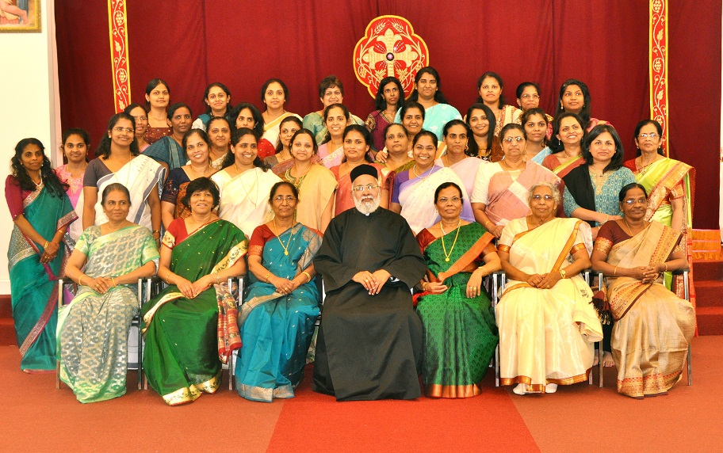

Sunday School is a spiritual organization functioning in all the parishes of the Malankara Orthodox Syrian Church throughout the world. It takes care of the spiritual nurturing of the children, by bringing them up in the knowledge and fellowship of Jesus Christ and His Church. The classes range from Pre-K to 12th grade.
"Let the children come to me; do not hinder them, for to such belongs the kingdom of God." St. Mathew 19:14
Sunday School constitutes an integral part of our church. As the primary mission we provide the seed of spiritual knowledge to be planted in our children as they grow through the Sunday School and its programs. Our youngsters are taught the Orthodox Christian faith and traditions so that they practice them in their life, develop a closer relationship with God, and pass it along to the future generations. Based on the Indian Orthodox Church curriculum, the Sunday School program is structured to provide children a basic understanding of the Holy Bible, faith, beliefs and the history of the Indian Orthodox Church. In addition, the children are also exposed to the hymns of the Holy Qurbana and important prayers used in our daily worship.
Our Sunday School year runs from September through May, and classes convene every Sunday immediately after the Holy Qurbana. Currently, there are more than 45 students enrolled in the Sunday school program, divided into seven classes based on age. Furthermore, the Sunday school conducts other annual activities such as the Sunday School Anniversary, Summer Reading Program, and Second Round. We also actively participate in national and local events such as Orthodox Vacation Bible School (OVBS), and regional Sunday school competitions conducted by the American Diocese and Ecumenical Kerala Christian Council (ECKC) programs.
Sunday School Teachers List 2012-2013
President
Rev.Fr.K.P.Varghese
Principal
Reju K. Kurian
Asst.Principal
Shereen Mathews
Beginners
Rinu John, Joshua Varghese, Raven Mathew
Class 1(Primary 1)
Aimee Joshua, Ajith Varghese
Class 11(Primary 11)
Annu Varghese, Shereen Mathews
Class-V(Juniors 1)
Jaimie Mathew, Abraham Eappen
Class-V11(Juniors 11)
Dinsha Joseph, Preethy Poulose
Class-X(Intermediate-1)
Silvy Dayal,Jolly Varghese
Class-X1(senior-1)
Abraham Joshua,Royce Mathew
Songs-Malayalam
Thomas George, Saramma Sam, Thomas Mathew
Songs -English
Jaime Joshua, Aimee Joshua
Martha Mariam Samajam

Martha Mariam Samajam is the women's wing of the Malankara Orthodox Syrian Church. It is one of the major spiritual organization of the church combining all the female members. The organization was founded in 1920 aimed at the spiritual progress of women. The founders named it "Martha Mariam Samajam"after the Blessed Virgin Mary whom they accepted as their interceding saint.
"Charm is deceptive, and beauty is fleeting; but a woman who fears the Lord is to be praised." Proverbs 31:30
Martha Mariam Samajam is the ladies wing in the Malankara Orthodox Syrian Church. The Martha Mariam Samajam, meant for the women of the Orthodox Church, was started in 1928 (1104 Edavam 15). K. M. Annamma of Kandathil family was the Secretary during its early years.
The Martha Mariam Samajam functions with the three objectives: "Pray, Illumine and Act.” Camps, seminars and study classes are being organized for the spiritual, educational and social progress and development of women. In 1964, the constitution of the organization was recognized by the Holy Episcopal Synod. The head office is the 'Vanithasamajam Mandiram' in Kanjikuzhi, Kottayam. About one-lakh of women are members of the Martha Mariam Samajam.
This is an organization of the women in the diocese, and all women in the Malankara Orthodox Church are members. Presently more than three thousand women are participating in the organization. Its headquarters is at Kottayam, Kerala, India, and presently, the Diocesan Center serves as the Samajam office in America.
The motto of this organization is “Pray, Act, and Shine,” with St. Mary as the Patron Saint. The Diocesan Bishop serves as the President of this organization, and appoints the Vice-President. All other office bearers and committee members are elected at the annual conference.
Our church Martha Mariam Samajam is one of the most active groups in the Diocese. Several members attend the annual conferences and retreats, and support the charity works led by the Church. The St. Mary's Association of our church is the backbone of the successful running of our Holy Week and Perunals. Their prayers, fasting and selfless dedication has been one of the greatest blessings to the parish. The Martha Mariam Samajam meets twice a month and more if guests visit the parish. In their gatherings, the Holy Bible is read, songs, and devotional message given, followed by any business matters and closing prayers.
Office Bearers:
President and Vicar: Rev.Fr.K.P.VargheseSecretary: Saramma Joshua